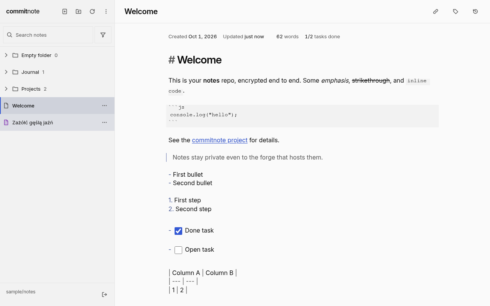
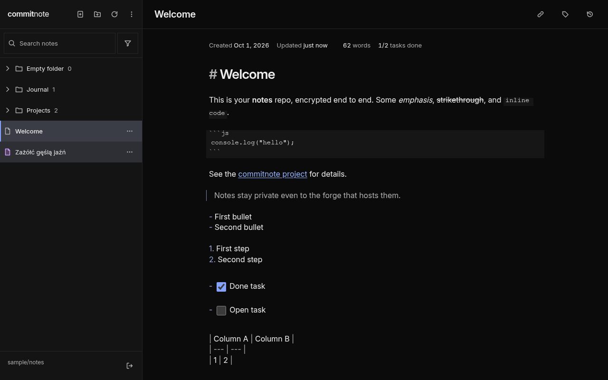
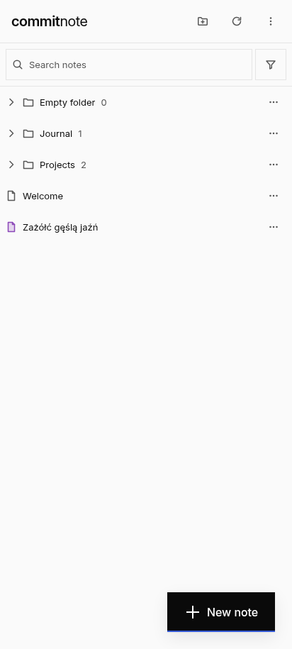
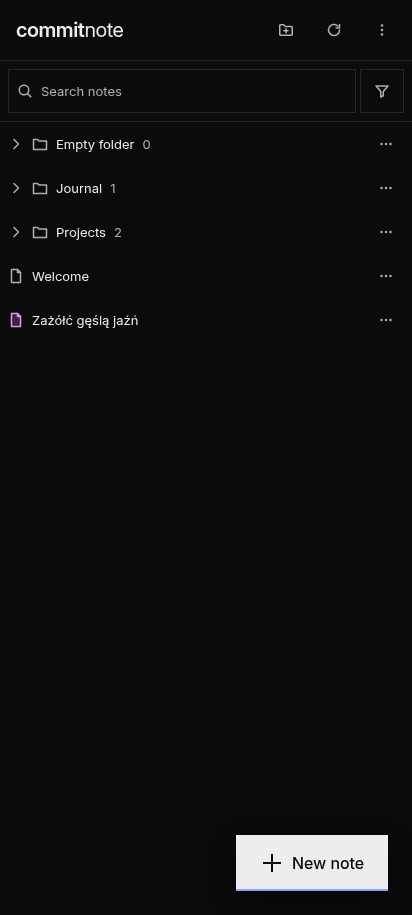
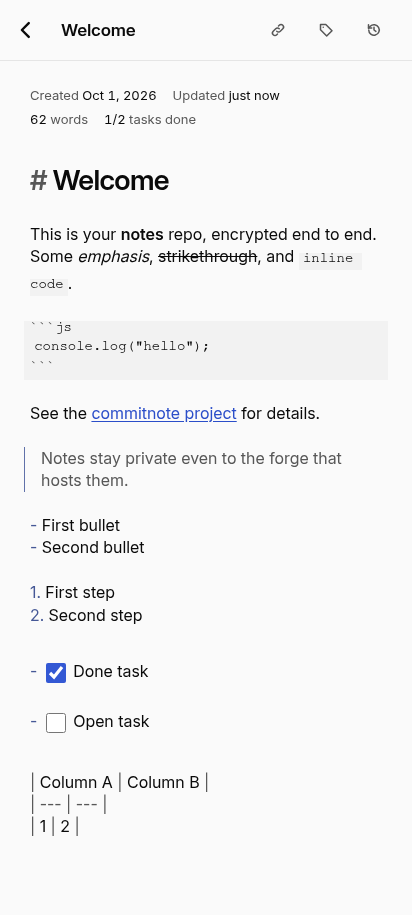
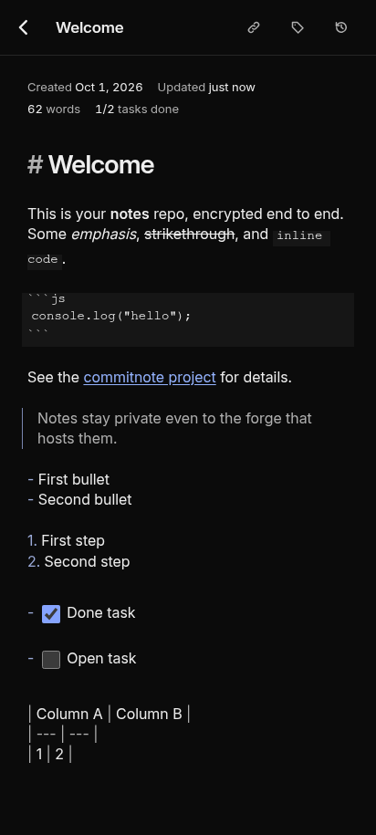
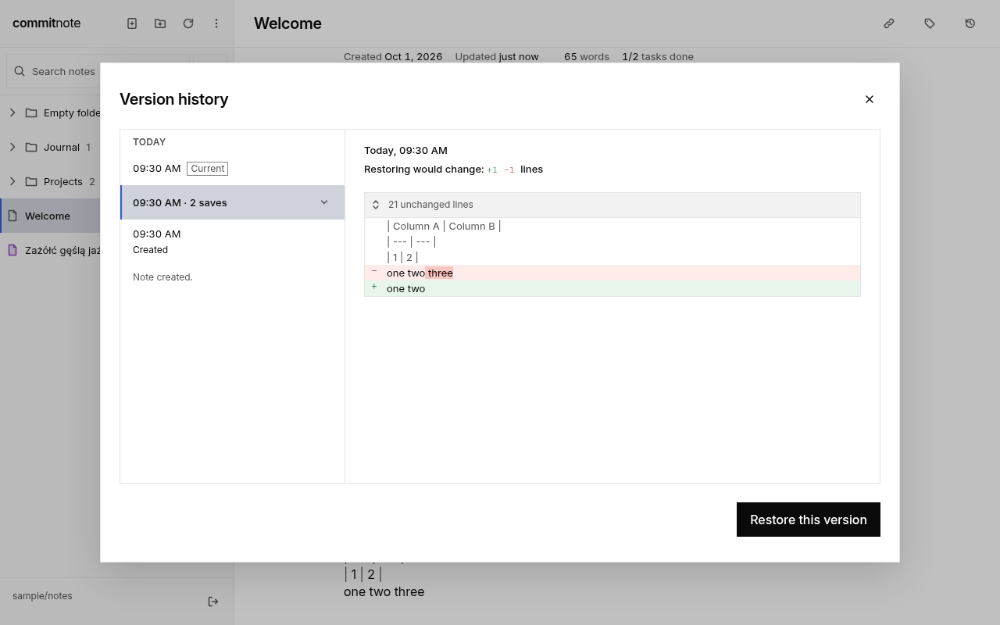
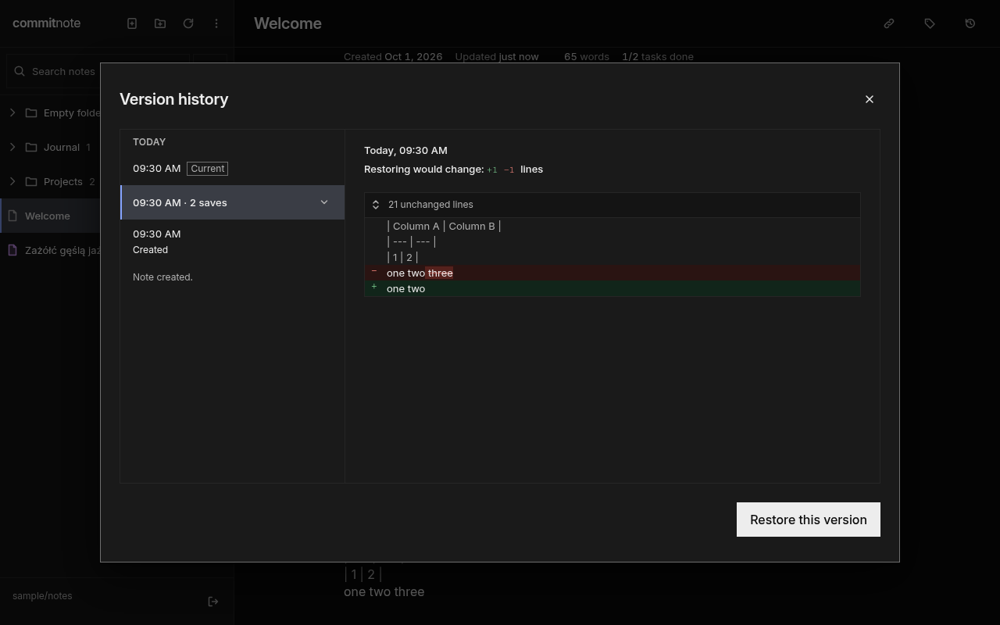

Encrypted markdown notes in your own git repository.
Write in a fast live-preview editor. Every note is encrypted on your device and committed to a GitHub or GitLab repository you own. No backend, no sign-up.
AppImage for x86_64 Linux · Installable from your browser on phone and desktop · Source on GitHub


How it works
Your notes go from the editor to your repository without passing through anyone else’s server.
-
Write
Markdown in a fast editor with live preview, on desktop or phone.
-
Encrypted on your device
Your passphrase derives the keys in your browser. It is never stored or sent anywhere. Argon2id and AES-256-GCM.
-
Committed to your repository
Each save is one commit to your GitHub or GitLab repository, with encrypted contents and encrypted file names.
- No backend: the app talks only to GitHub or GitLab.
- Your passphrase never leaves your device and is never stored.
- Commit messages never contain note names or contents.
Features
A focused notes app that keeps everything in a repository you control.
-
Live-preview markdown editor
Markdown renders as you type, and the note keeps exactly the text you wrote.
-
End-to-end encryption
Argon2id and AES-256-GCM in your browser, with encrypted file and folder names.
-
Your GitHub or GitLab repository
One commit per save to a repository you own, with no backend in between.
-
Sync across devices
Changes made on different devices merge, and merging never discards content.
-
History, trash and restore
Restore any saved version of a note, and bring deleted notes back from the trash.
-
Encrypted share links
Share an encrypted copy of a note whose secret stays in the link, with an optional password.
-
Installable, works offline
Install it on phone or desktop. Edits made offline are saved once you are back online.
-
Linux desktop app
A native window for your notes, as an AppImage for x86_64 Linux.






What you need
Three things to set up once. The app links straight to the forms for the last two.
-
A GitHub or GitLab account
Your notes live with a git host you already use.
-
An empty private repository
One repository just for your notes. The app links to the form that creates it.
-
An access token for it
Fine-grained on GitHub, with the
apiscope on GitLab. The app links straight to a prefilled token form.
Your notes. Your repository.
Open the app in your browser, or download it for Linux, and start writing.